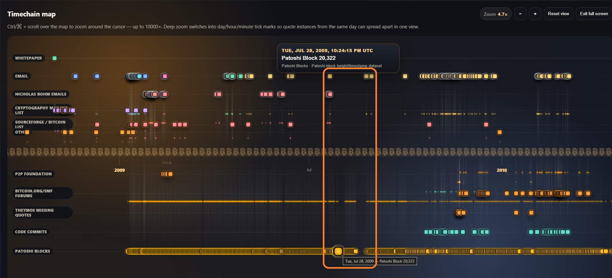

Feature | SatoshiTimeline.com | June 21 2026
SatoshiTimeline.com Launched
A Chronological Map of Satoshi Nakamoto’s Known History
Satoshi Nakamoto’s story is usually told in fragments: the Bitcoin white paper, the cypherpunk mailing list conversations, the latter forum posts, and Satoshi’s final disappearance. Each piece has been studied, quoted, argued over, and archived many times. Though some new discoveries are still being made, and will be covered by The Satoshi Times in the near future.
But until now, the Satoshi story has rarely been presented as something you can visually move through.
SatoshiTimeline.com changes that.
Built as a searchable, deep-zoom timeline of Satoshi Nakamoto’s entire historically documented activity, SatoshiTimeline.com brings together the writings, emails, forum posts, source code commits, and related Bitcoin history that shaped the earliest years of the network. Instead of forcing visitors to jump between scattered archives, message boards, PDFs, and old code repositories, the site presents Satoshi’s public and newly surfaced activity all in one place, as a single time-based map. All historical Satoshi activities are presented in chronological order, with original source links, and no detail is left undocumented.
The result feels like a time machine you can zoom through with ease.
Users can scroll, zoom, and explore Satoshi’s activity across Bitcoin’s earliest timeframes, while enabling and disabling various datasets along the timeline. Visitors can move from multi-year context down into specific days, hours, and individual events, while disabling or enabling multiple years of activity and various datasets. The deep-zoom interface allows related posts and messages from the same period to spread out visually, making it easier to see the events surrounding Bitcoin’s genesis.
For researchers, Bitcoin historians, developers, journalists, and curious newcomers, this is an amazing resource that will be continually updated with more context and discoveries over time. Satoshi’s legacy is highlighted here, as a sequence of decisions, explanations, responses, patches, debates, and sometimes — silence. SatoshiTimeline.com makes this sequence of events and silence visible.
For example, it's evident that Satoshi Nakamoto likely took some kind of break from his work on Bitcoin, or at least was AFK, during a few periods of time where there are no patoshi blocks being produced and no online communications activity. This can be especially visible from late July to late August of 2009. Perhaps a northern hemisphere summer sabbatical of some kind?

The site currently presents more than one thousand Satoshi-related events, including writings, emails, forum activity, comments in source code commits and patoshi blocks. It also highlights undocumented material, including more than 60 previously unknown Satoshi emails involving Nicholas Bohm and others. The new Bohm & Satoshi feature is now available at /bohm/. These and other additions make SatoshiTimeline.com the most complete record of Satoshi Nakamoto in existence.
Users can also use the search bar tool to look for specific quotes and then locate them in time. A sentence that might once have appeared as an isolated screenshot or citation can now be placed back into its historical context. What was happening before it? What happened after? Was Satoshi responding to a technical concern, a misunderstanding, a bug, or a philosophical question about Bitcoin’s purpose?
That context is the value of the timeline, where all events are put in order — with their timestamps and contexts accounted for, and adjusted to be consistent in UTC time.
Bitcoin’s origin story is often simplified into mythology. But the real story is far more detailed and far more human. It includes patient explanations, technical revisions, cautious design choices, and conversations with early contributors who were trying to understand what Bitcoin was and what it would become. A censorship resistant monetary network for the world, without trusted third parties.
SatoshiTimeline.com gives users a way to study that history in full living detail.
The interface is especially suited for desktop exploration, where the large datasets and deep-zoom visualizations can be experienced fully.
Most importantly, SatoshiTimeline.com helps preserve Bitcoin history in a form that is accessible. The hope is that this site complements other legendary Satoshi archives with a fun new visual exploration for the next generation of Bitcoiners.
For anyone interested in where Bitcoin came from, how its creator communicated, and how the project evolved from an idea into a running network, SatoshiTimeline.com is an amazing new resource.
Enjoy exploring Bitcoin history with Satoshi!